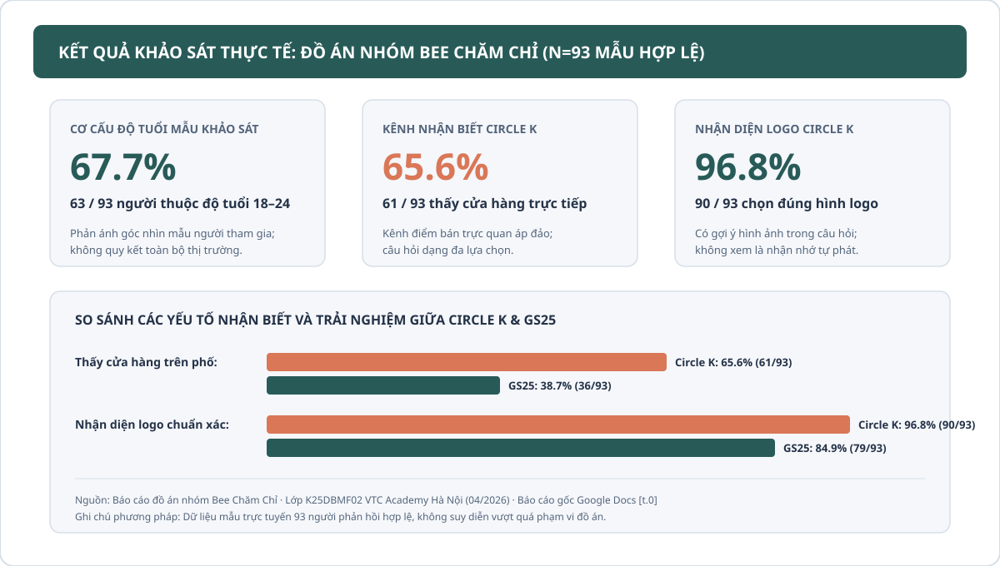

Circle K và GS25: Nghiên cứu nhận thức thương hiệu
Đồ án môn học tìm hiểu cách người tham gia khảo sát nhận biết và đánh giá Circle K, GS25. Case trình bày phương pháp, 3 số liệu đối chiếu trong mẫu và cách nhóm phát triển đề xuất từ dữ liệu.
Tài liệu gốc được lưu trữ trực tuyến:
Báo cáo đầy đủ của nhóm trên Google Docs (tab t.0). Bạn có thể mở đọc toàn bộ nội dung gốc.
Bối cảnh & Đề bài nghiên cứu
Hai chuỗi Circle K và GS25 cùng phục vụ nhu cầu mua sắm tiện lợi tại đô thị, nhưng cách người được hỏi nhớ đến thương hiệu và đánh giá trải nghiệm có thể khác nhau. Nhóm chọn khảo sát các yếu tố nhận biết và sử dụng để làm rõ những khác biệt đó trong phạm vi đồ án học tập.
Báo cáo sử dụng nghiên cứu tài liệu, quan sát tại điểm bán, bảng hỏi trực tuyến và phỏng vấn sâu. Bảng hỏi khảo sát gồm các nhóm câu hỏi về thói quen mua sắm, kênh nhận biết, nhận diện logo và mức độ hài lòng về dịch vụ.
Ba kết quả đã đối chiếu văn bản nguồn
Số liệu được trích xuất trực tiếp từ các câu hỏi tương ứng trong báo cáo, không gộp tỷ lệ hoặc suy rộng thành toàn bộ dân số Việt Nam:
| Nội dung / Câu hỏi khảo sát | Dữ liệu ghi nhận trong báo cáo | Cách diễn đạt chuẩn xác |
|---|---|---|
| Cơ cấu độ tuổi 18–24 | 63/93 người (khoảng 67.7%) | Trong mẫu khảo sát của nhóm, người tham gia từ 18–24 tuổi chiếm 63 trên tổng số 93 người phản hồi hợp lệ. |
| Kênh nhận biết Circle K qua cửa hàng | 61/93 người (khoảng 65.6%) | 61/93 người chọn phương án thấy cửa hàng trực tiếp trên phố (câu hỏi nhiều lựa chọn). |
| Nhận diện đúng logo Circle K | 90/93 người (khoảng 96.8%) | 90/93 người chọn đúng hình ảnh logo Circle K trong bài hỏi có gợi ý hình ảnh trực quan. |
Biểu đồ trực quan hóa dữ liệu

Phân tích biên tập & Giới hạn nghiên cứu
Phân tích nhận định: Nhóm tuổi 18–24 chiếm phần lớn mẫu khảo sát, do đó kết quả trước hết phản ánh góc nhìn và hành vi của nhóm đối tượng học sinh - sinh viên và người đi làm trẻ. Tỷ lệ nhận đúng logo Circle K đạt 96.8% trong bài hỏi có gợi ý hình ảnh, chứng minh độ nhận diện hình ảnh rất tốt nhưng không tự động đồng nghĩa với mức độ ghi nhớ tự phát (unaided recall).
Trong mẫu, việc thấy cửa hàng trực tiếp là một kênh nhận biết được nhiều người chọn; có thể đề xuất khảo sát tiếp yếu tố điểm bán. Từ dữ liệu này chưa thể kết luận quảng cáo số không hiệu quả hoặc một kênh duy nhất gây ra hành vi mua sắm.
Đề xuất giải pháp & Vai trò cá nhân
Đề xuất của nhóm: Từ các phản hồi về nhận biết và dịch vụ, nhóm đề xuất chú trọng tính nhất quán của thông tin khuyến mãi tại điểm bán, cải thiện nội dung bảng hướng dẫn dịch vụ tiện ích và đơn giản hóa cách truyền thông quyền lợi của chương trình thành viên. Đây là đề xuất môn học của đồ án nhóm, chưa phải giải pháp được Circle K hay GS25 chính thức áp dụng.
Vai trò cá nhân: Là thành viên nhóm Bee Chăm Chỉ trong đồ án môn học tại VTC Academy. Báo cáo kết quả và đề xuất là thành quả chung của cả nhóm nghiên cứu.